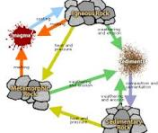

Overview: Earth science examines the physical makeup of our planet — its rocks, oceans, and atmosphere.
Focus: The rock cycle shows how igneous, sedimentary, and metamorphic rocks continuously form and transform through heat, pressure, and erosion.
The rock cycle illustrates how rocks are constantly changing through natural processes. It connects the study of minerals, volcanoes, and erosion. Learning about the rock cycle helps us understand Earth's history and landscape formation.
